Cold Air Intake
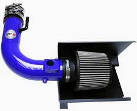 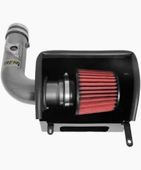A cold air intake (CAI) is a performance modification for a vehicle's engine that involves replacing the factory air intake system with one that draws in cooler air from outside the engine compartment. This cooler air is denser, meaning it contains more oxygen, which can improve engine performance by allowing for more efficient combustion.
Headers
Equal Length Header
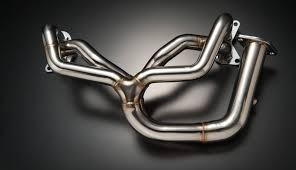The idea behind equal-length headers is to allow exhaust gases from all cylinders to exit the engine at exactly the same time. This creates a more balanced flow and reduces turbulence in the exhaust system. When the exhaust pulses from the cylinders are equalized and spaced evenly, this enhances exhaust scavenging (the process by which exhaust gases are drawn out of the cylinder and fresh air/fuel mixture is sucked in). This leads to a more efficient exhaust system and better engine performance.
Unequal Length Header
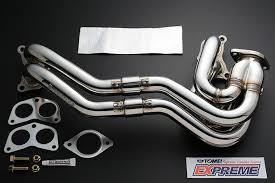In an unequal-length header setup, the exhaust pipes are deliberately designed to have varying lengths. This can be for several reasons, including packaging constraints (making it easier to fit in the engine bay) or tuning for a specific type of engine or driving characteristic.Unlike equal-length headers, where each exhaust pipe is the same length to equalize the exhaust pulses and improve scavenging, unequal-length headers tend to create irregular exhaust pulses. This may reduce the effectiveness of exhaust gas scavenging (the process of drawing spent gases out of the cylinders), but it can still provide performance benefits depending on the design.
Exhaust
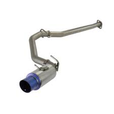 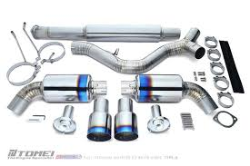 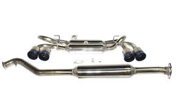Exhaust Systems are critical components of a vehicle’s overall performance, as they manage the expulsion of gases from the engine while also helping reduce noise, control emissions, and in some cases, improve power output. An exhaust system typically includes multiple parts that work together to direct exhaust gases away from the engine and the vehicle, and it can be modified for performance, sound, and appearance.
Suspension
Coilovers, Lowering springs, Air Suspension
Coilovers
Coilovers are a type of suspension system that combines a coil spring and a shock absorber into a single unit. They offer significant customization and performance benefits, making them a popular choice for those looking to upgrade their suspension 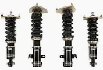.
Lowering Springs
Lowering springs are a simpler and more affordable suspension modification compared to coilovers. They are springs that lower the ride height of the car by replacing the stock springs. They don't come with adjustable damping, which means the shock absorbers remain stock. 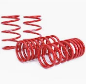
AirBags
Air suspension uses air bags (also known as airbags or air springs) instead of traditional metal springs to support the vehicle. It is the most versatile suspension system, offering adjustable ride height and even adjustable ride stiffness, depending on the system you choose. 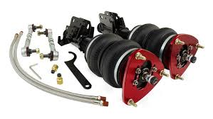
Wheels
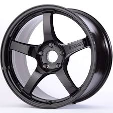 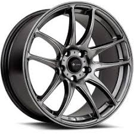 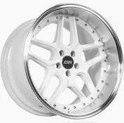 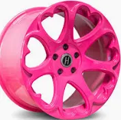 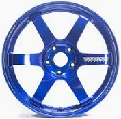Upgrading to aftermarket wheels is an excellent way to improve the look and performance of your vehicle. Whether you’re looking to enhance your car’s handling, reduce weight, or simply make it stand out, aftermarket wheels offer a wide range of options. Keep in mind the factors like size, offset, material, and budget when selecting the right wheels for your vehicle.
Choosing the Right Aftermarket Wheels:
- Wheel Size:The size of the wheel is one of the first things to consider when upgrading. Aftermarket wheels are typically measured in diameter (in inches) and width (in inches). Larger wheels (17-inch, 18-inch, 19-inch, etc.) are often chosen for their performance benefits, but it’s important to consider how the larger wheels will affect ride quality and handling. For example, larger wheels require low-profile tires, which might provide better handling but can reduce comfort on rough roads.
- Offset and Backspacing:The offset determines how far the wheel sits from the hub of the vehicle. A positive offset means the wheel sits inward, while a negative offset pushes the wheel outward. The backspacing is the distance from the mounting surface to the back edge of the wheel. These factors affect the wheel's alignment, handling, and stance.
- Bolt Pattern: Your vehicle has a specific bolt pattern (the number of bolt holes and the distance between them). Aftermarket wheels need to match this pattern to be compatible with your car. Always check the bolt pattern before purchasing wheels.
- Material and Durability:As mentioned earlier, wheels are made from various materials, each offering a different balance between weight, strength, and cost. Forged aluminum is the most performance-oriented, while cast aluminum is more affordable but heavier.
- Finish and Style:Aftermarket wheels come in a variety of finishes, including chrome, matte, gloss black, silver, and even custom-painted colors. The finish impacts the overall look of the car, as well as the wheel’s ability to resist corrosion.